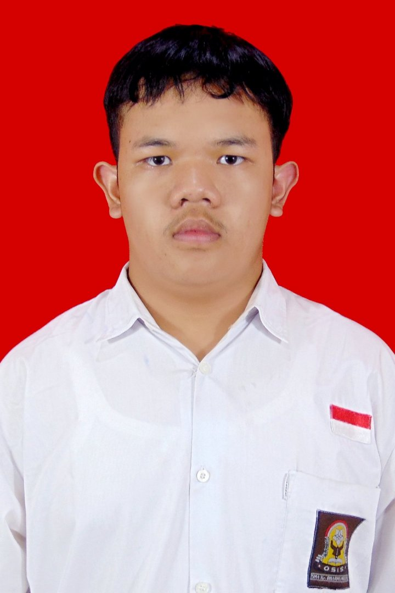

Daniel Riski Saputra Sitompul
Digital Business Student • Web Development • Nature Explorer
Mahasiswa S1 Bisnis Digital yang menyukai teknologi digital, website, desain kreatif dan alam.
Tentang SayaDigital Business Student • Web Development • Nature Explorer
Mahasiswa S1 Bisnis Digital yang menyukai teknologi digital, website, desain kreatif dan alam.
Tentang Saya
Halo, saya Daniel Riski Saputra Sitompul.
Saya adalah mahasiswa S1 Bisnis Digital di Telkom University Surabaya.
Saya memiliki minat pada teknologi digital, pengembangan website, desain kreatif, serta senang menikmati alam dan mendaki gunung.

S1 Bisnis Digital
Membuat website pribadi menggunakan HTML, CSS, dan JavaScript yang responsif dan modern.
Mempelajari dasar desain antarmuka dan pengalaman pengguna untuk website modern.
Email:
danielsitompul899@gmail.com
Surabaya, Indonesia